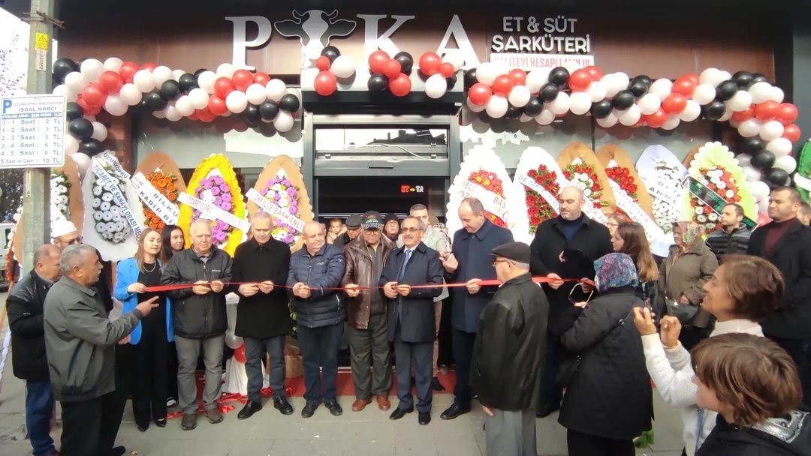

WE ARE A GROWING ENTERPRISE
Our flagship businesses include Puka Creations, an established import-export company in trending items and jewelry for over 30 years, and Puka Gida, a food conglomerate that spans a döner fast food chain, delicatessen shops, a family restaurant, and a large-scale industrial farm. With a presence across the globe, Puka Holdings also owns a jewelry manufacturing plant in China, dairy and meat processing facilities in Turkey, and has since recently expanded into the textile industry with the investment of a startup company, Supasoft Apparel based in Las Vegas. Our ventures also extend to high-end dining experiences and bakeries in China, embodying our commitment to innovative growth across industries.